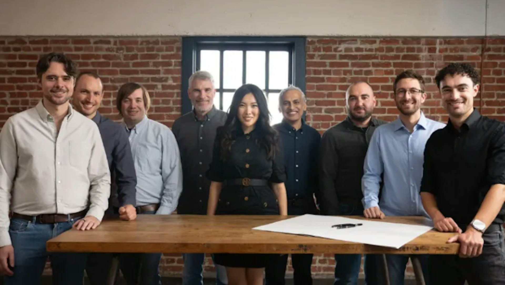
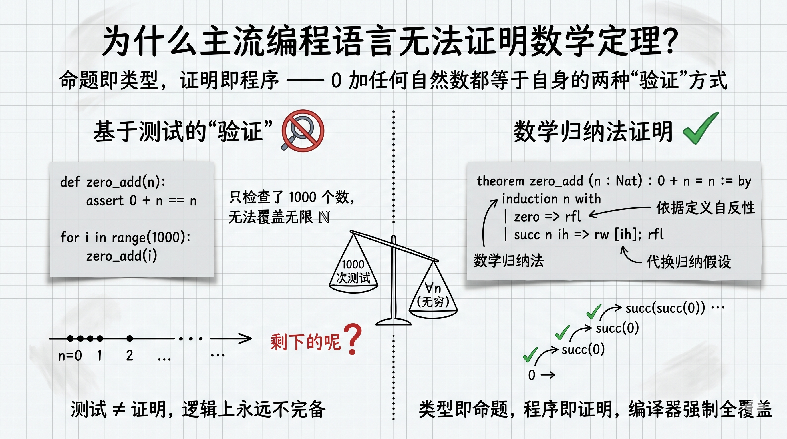
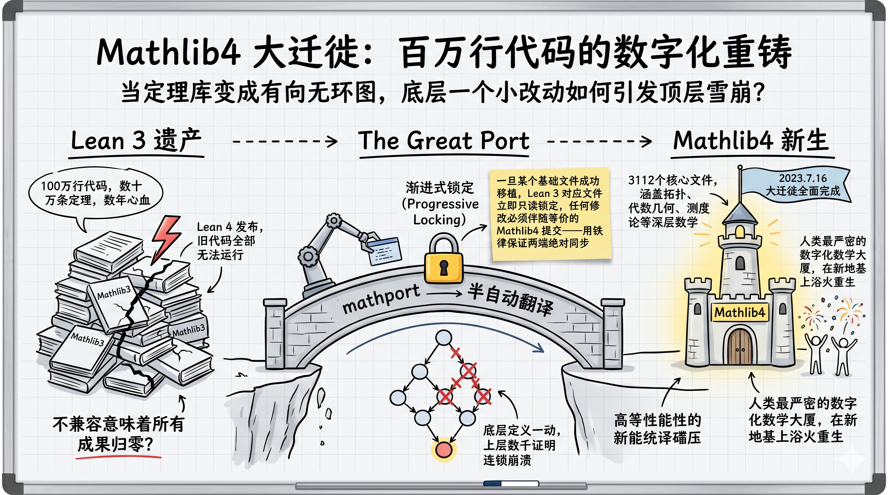

[持续更新中] 本文是一篇关于 Lean 4 的技术综述，部分章节仍在撰写中，将陆续补充完善。
引言
2025 年 12 月，一则新闻在 AI 与数学圈同时掀起波澜。24 岁的斯坦福天才少女洪乐潼创立的初创公司 Axiom，在"零产品、零业务"的阶段，仅凭一份愿景便斩获了 3 亿美元的惊人估值。更令人瞩目的是，被誉为"最懂拉马努金的当代数论学者" Ken Ono 也宣布加入这家年轻的公司。
支撑起这个梦幻开局的，是他们打出的极具野心的旗号：AI for Math。
更准确地说，是借助形式化编程语言，让 AI 像顶尖数学家一样，不仅能输出灵感，更能构建出严丝合缝、可被编译器绝对验证的形式化证明（Formal Proofs）。Axiom 描绘的终局远不止于解数学题——他们希望未来 AI 写出的关键代码和核心推理，都能在数学层面上被"自证清白"：确保函数穷尽所有边界条件，确保逻辑不引发内存泄漏，确保整个系统从根源上免疫特定类型的安全漏洞。

在迈向通用人工智能（AGI）的征途中，高阶数学推理与复杂逻辑验证，始终是学术界与工业界仰望的"王冠明珠"。然而，传统大语言模型（LLM）基于概率预测与自回归生成的本质，决定了它们在面对需要绝对严谨的长逻辑链时，往往会不可避免地滑向"幻觉"。要打破这一瓶颈，单靠堆砌算力或增加语料已力不从心。
交互式定理证明器（ITP）与大模型的深度融合，正成为打破这堵叹息之墙的破局点。
在众多形式化验证生态中，Lean 4 的崛起显得尤为耀眼。它构筑了一座连接"人类模糊数学直觉"与"机器绝对严密性"的桥梁，正在暗中蓄力，试图掀起一场横跨数学发现、自动定理证明与高安全软件开发的范式革命。
相比目前烈火烹油般的"智能体编程（Agentic Coding）"，整个业界对 Lean 4 的感知或许还停留在水面之下。但种种技术暗流表明，我们正处于一场巨大技术风暴的前夜。因此，本文想撕开这层略带学术高冷的面纱，聊聊 Lean 4 的前世今生，试图用技术人最熟悉的语言和视角，带大家重新认识这项或许会重塑未来编程形态的技术。
本文大纲
- 混沌初开：Lean 的概念起源与语言进化 (2013–2021)
- 从微软研究院实验室走出的"新物种"
- 为什么主流编程语言证明不了数学定理？
- 史诗级重构：从 Lean 3 到 Lean 4 的底层跃迁 (2023)
- 破釜沉舟：为什么一定要彻底重构？
- Mathlib 4 的大迁徙：人类数学知识库的"数字化重铸"
- 逻辑与概率的交汇：LLM 与 Lean 4 的互补共生 (2020–2025)
- 早期尝试：GPT-f 与 MiniF2F 揭示的概率推理局限 (2020–2022)
- 搭建交互桥梁：LeanDojo 与结构化状态机（MDP）的引入 (2023)
- 业界与学界的加入：DeepSeek-Prover、Numina-prover 等等 (2024)
- 引入搜索与反馈：AlphaProof 与 MCTS 带来的破局苗头 (2024.07)
- 走向工程实用：测试期算力扩展与 Agent 多工具协同的初步探索 (2025)
- 价值外溢：从"解答数学题"到"构建高可靠软件"
- 理论基石：Curry-Howard 同构在软件开发中的现实意义
- 护航关键基础设施：形式化验证在底层沙盒、容器调度与加密算法中的落地潜力
1. 混沌初开：Lean 的概念起源与语言进化 (2013–2021)
到底什么是形式化编程语言？它和我们日常使用的传统编程语言（如 Python、C++）有什么本质区别？
要想回答这两个问题，我们需要将时钟拨回数十年前，去寻找 Lean 诞生的技术基因。
从实验室里走出的"新物种"
早在 1950 年代，RAND 公司的三位学者 Allen Newell、Herbert Simon 和 Cliff Shaw 就在思考一个极其宏大的问题：能否将罗素与怀特海的《数学原理》用计算机程序来实现？ 毕竟，书里的数学命题严丝合缝、规则清晰、每一步都能被严格校验，这天生就适合让计算机来处理。
于是，在 1955 年底到 1956 年初，世界上第一个自动定理证明器（Automated Theorem Prover, ATP）——Logic Theorist 诞生了，并在此后著名的达特茅斯会议上大放异彩。它确立了一个影响至今的核心思想：数学推理是可以被拆解为符号、规则与搜索，并由程序来严格验证的。 在后来漫长的历史长河中，这一思想被不断传承，从 de Bruijn 的 Automath 项目，到 LCF 系统、Coq，最终演进到了今天现代形式化验证的基石——带有归纳类型的构造演算（CIC）架构。
从左到右分别是 Allen Newell、Herbert Simon 和 Cliff Shaw
时间来到 2013 年，微软研究院的计算机科学家 Leonardo de Moura 决定发起 Lean 项目。当时的形式化领域面临着一个巨大的痛点："自动定理证明"（ATP，高度自动化但像个黑盒）与"交互式定理证明"（ITP，极其严谨但需要大量纯手工编写）之间存在着难以逾越的壁垒；而且当时的学者在编写自定义证明策略（Metaprogramming）时，往往需要痛苦地在多种编程语言（如 Coq 和 OCaml）之间反复横跳。
Leonardo 的愿景很纯粹：将自动化与交互式证明统一起来，并实现"用 Lean 开发 Lean"。 这一动机直接催生了如今的 Lean 4——它不仅是一个 ITP，更是一门纯函数式、能够直接编译到 C、且具备极高运行效率的通用编程语言。
伴随着 2014 年 Lean 0.1 版本的问世，这个项目开始在探索中飞速进化。2017 年 1 月发布的 Lean 3 迎来了历史性的拐点：它将 Lean 从单纯的逻辑规范语言，正式升级为元编程语言。用户首次能够用 Lean 语言本身来编写自动化证明策略（Tactic）。这种前所未有的可扩展性直接点燃了整个学术界的热情，催生了庞大的数学基础库 Mathlib。至此，Lean 从微软的一个小团队实验项目，正式蜕变为由全球数学家共同繁荣的庞大生态。
为什么主流编程语言证明不了数学定理？
了解完历史，很多读者可能对"形式化编程"依然缺乏直观的感受。它到底跟我们平时写的 Python 有什么不同？为什么 Python 不能用来证明数学定理？
这里需要引入形式化语言中最核心的哲学：命题即类型，证明即程序（Propositions as Types, Proofs as Programs）。
让我们来看一个所有人都能一眼看懂的简单数学定理："0 加任何自然数都等于它自身"。用数学符号表示就是：
$$\forall n,\ 0 + n = n$$
如果你用 Python 来"证明"这个定理，你大概只能这么写：
def zero_add(n):
# 只能检查运行时具体的数值
assert 0 + n == n
# 尝试测试 1000 个例子
for i in range(1000):
zero_add(i)看出问题了吗？Python 只能基于枚举进行运行时检查。哪怕你循环了一万次、一亿次，你也只是"测试"了这部分数据，永远无法在逻辑上覆盖"所有的自然数 $n$"。一旦底层代码被修改，这个性质只能靠重新跑一遍测试用例来祈祷它没坏。测试永远不能代替严谨的数学证明。
而数学家会怎么做？为了覆盖无限的自然数，我们需要使用数学归纳法：首先证明 $n = 0$ 的情况，然后假设 $n$ 成立，去证明 $n + 1$（即它的后继数）也成立。
在 Lean 4 中，我们可以完美地将这种数学思维转化为程序：
-- 定理：对所有自然数 n，0 + n = n
theorem zero_add (n : Nat) : 0 + n = n := by
induction n with
| zero =>
-- 基础情况：目标变成 0 + 0 = 0。等式两边在定义上完全相同，直接使用 rfl (reflexivity) 证明。
rfl
| succ n ih =>
-- 归纳步骤：目标是 0 + (succ n) = succ n
-- 此时我们拥有归纳假设 (ih) : 0 + n = n
-- 使用 rw (rewrite) 策略，将目标里的 0 + n 替换为 n，目标就变成了 succ n = succ n
rw [ih]
-- 两边再次完全相同，证明结束。
rfl这段代码的底层到底发生了什么？
在 Lean 4 里，$0 + n = n$ 根本不是一个布尔值（True/False），而是一个类型（Type）。更神奇的是，这个类型依赖于变量 $n$ 的值，这就是大名鼎鼎的"依赖类型"（Dependent Type）。
当你写下 theorem zero_add (n : Nat) : 0 + n = n 时，你实际上是在声明一个函数：这个函数接收任意一个自然数 $n$，并要求你返回一个类型为 0 + n = n 的实例对象。
而代码块中的 induction、rw、rfl 这些被称为"策略（Tactic）"的指令，在底层会被 Lean 的编译器编译成一个普通的函数程序（即证明项 Proof Term）。
总结来说： 传统语言的编译器只检查你代码的运行逻辑对不对；而 Lean 4 允许你给函数写一个"绝对不会出错的数学规格"，并且这个规格本身就是类型。Lean 的编译器会死死地盯着你，强制你一步步构造出符合该规格的程序。这个敲代码构造程序的过程，就是数学证明。

2. 史诗级重构：从 Lean 3 到 Lean 4 的底层跃迁 (2023)
正如上文所述，2017 年发布的 Lean 3 已经是一个高度可用的版本，并在随后的数年里成为了全球数学家共建的硬核游乐场，Mathlib 也由此诞生。
如果你熟悉 Python，你可以将 Mathlib 粗略地理解为 Lean 语言的 pip 第三方依赖库。只不过，这个库里装的不是函数代码，而是人类经过编译器绝对检验的现代数学知识结晶（定义、定理和证明）。Lean 语言本身的内核极其精简，但 Mathlib 就像地基上的砖瓦，支撑起了极其庞大的证明体系。
数学定理的证明从来不是孤立的。当你要证明一个前沿的数论命题时，你可能需要同时调用群论、环论、拓扑学、实分析、组合数学甚至范畴论里的几百个旧结论。如果没有 Mathlib 这个极其丰富的"弹药库"，你每走一步都要从最基础的公理（如 $1+1=2$）开始推导，根本走不到现代数学的深水区。
破釜沉舟：为什么一定要彻底重构？
尽管 Lean 3 取得了巨大的生态成功，但它依然面临着一个致命的架构瓶颈：语言的割裂。
Lean 3 的底层大部分是用 C++ 编写的。这意味着，如果一位数学家在使用过程中发现缺少某种自动化推导工具，想要扩展编译器的能力，他不仅需要精通数学，还得去修改晦涩的 C++ 源码并重新编译整个系统。这种高昂的扩展成本，极大地限制了社区的创造力。
于是，从 2018 年开始，Leonardo 团队做出了一个极其大胆甚至可以说是"疯狂"的决定：推翻重来，秘密研发 Lean 4.0。
在 Lean 4 中，除了一个微小的信任内核（Kernel）和基础运行时使用 C/C++ 编写外，整个 Lean 编译器、语法解析器和核心库，完全使用 Lean 4 语言自身构建。 这就是所谓的系统自举（Bootstrapping）。更具颠覆性的是，Lean 4 抛弃了低效的虚拟机，引入了 AOT（提前编译）机制，将 Lean 代码直接编译为 C 代码；同时底层引入了创新的 Perseus 引用计数内存管理模型，使其在没有传统垃圾回收器（GC）拖累的情况下，运行速度足以比肩 C 和 Rust。
直到 2023 年，官方才正式发布了稳定版本的 Lean 4.0.0。此时的 Lean，已经不仅是一个定理证明器，更蜕变成了一门拥有强大宏系统（Macro System）、可以编写底层网络服务和并发调度系统的高性能通用编程语言。
Mathlib4 的大迁徙：人类数学知识库的"数字化重铸"
然而，技术的飞跃往往伴随着沉重的历史包袱。Lean 4 的彻底重构带来了毁灭性的副作用：向后不兼容。
随着 Lean 4 的发布，整个开源数学社区面临着一场生死攸关的工程危机：Lean 3 时代积累的包含数十万条数学定理、超过一百万行代码的 Mathlib 库，由于底层语法的剧变，无法在新编译器上运行。这意味着，全球数百位顶尖数学家过去几年熬夜敲出的心血，面临着付之东流的风险。
为了跨越这一鸿沟，Lean 社区发起了开源史上最气势磅礴的代码移植工程——被后人称为 "The Great Port"（大迁徙）。
这绝不是简单的"复制粘贴"。由于数学定理在代码结构上是一个极其庞大且嵌套极深的有向无环图（DAG），底层拓扑学的一个微小定义改变，都可能导致顶层代数几何的数千个证明全部崩溃。
为了在这场百万行代码的重构中保持秩序，社区开发了半自动翻译工具 mathport 来协助语法转换，并实施了极其严酷的"渐进式锁定"（Progressive Locking）并行开发策略：一旦依赖树中的某个基础文件被成功验证并人工修复移植到了 Mathlib4，Lean 3 的旧代码库中对应的文件就会立刻进入"只读锁定"状态。任何试图在旧版中对其进行的修改提交（PR），都必须强制伴随一个等价的 Mathlib4 提交。这在海量并发的社区协作中，以近乎严苛的纪律保证了两端数据状态的绝对同步。
经过漫长且艰苦的攻坚，2023 年 7 月 16 日，涵盖了拓扑学、代数几何、测度论等深层数学分支的 Mathlib 大迁徙宣告全面完成，涉及超过 3112 个核心文件。这座人类文明史上最严密的数字化数学大厦，终于在全新的高性能地基上，迎来了它的浴火重生。

3. 逻辑与概率的交汇：LLM 与 Lean 4 的互补共生 (2020–2025)
站在当下回望，大语言模型（LLM）与形式化推理的相遇，仿佛是一场注定的互补。
LLM 本质上是概率模型，长于发散、联想与直觉，却也因此带有天然的不可靠性；而形式化推理恰恰相反，它代表着绝对的严密与收敛，却也因规则过于细碎繁琐而常让人类研究者感到望而却步。这两者的结合，恰如给狂奔的野马套上了精密的缰绳——形式化引擎为 LLM 提供了无差错的"沙盒"与探索边界，而 LLM 强大的代码生成与模式匹配能力，又刚好化解了形式化编程的繁琐。尽管这一领域的基建仍在完善，但两者之间产生的奇妙化学反应，正悄然成为解锁 AI 深层推理能力的钥匙。
早期尝试：GPT-f 与 MiniF2F 揭示的概率推理局限 (2020–2022)
早在 2020 年——那还是 LLM 彻底破圈、ChatGPT 尚未问世的"前夜"，OpenAI 的前沿研究员 Stanislas Polu 和 Ilya Sutskever（没错！！就是大名鼎鼎的 OpenAI 前掌门人）就已经将目光盯向了"形式化定理证明"，他们想探索生成式 AI 的可能性。
在当年发表的奠基性论文中，他们提出了著名的 GPT-f 模型（一个参数量约 774M 的类似 GPT-2/3 架构模型）。这是历史上第一次尝试使用生成式语言模型来做数学证明。但值得注意的是，GPT-f 最初选择的试验场并非 Lean，而是一个更古老、极度贴近机器底层的形式化系统——Metamath。
尽管 GPT-f 在 Metamath 上成功找到了一些连人类都未曾发现的简短定理，但研究团队很快撞上了一堵无形的墙：Metamath 过于底层，根本无法优雅地表达复杂的现代高阶数学。与此同时，伴随着 Lean 语言的快速崛起，大量的现代数学理论开始在 Lean 系统中实现形式化。与 Metamath 相比，Lean 拥有大量强大的策略（Tactic）来辅助推导，这使得通常的 Lean 证明要比 Metamath 简短且抽象得多。
为了提供一个客观的评估标准，2021 年，OpenAI 牵头发布了 MiniF2F 测试集。这是一个由 AMC、AIME 等高中及研究生竞赛题目组成的跨系统基准（Benchmark），旨在为当时不同的"AI 证明器"提供一个统一的角斗场。
测试结果令人深思：当研究员将基于 Metamath 训练的 GPT-f 应用于 MiniF2F 时，通过率仅有可怜的 1%。然而，当模型切换到使用 Lean 及其 Mathlib 库进行训练时，奇迹出现了——正确率飙升至接近 30%！
在训练算力相当的情况下，Lean 展现出了压倒性的优势。这主要得益于模型在 Lean 中能够调用高级策略（High-level Tactics），大模型不再需要去预测底层的符号挪动，而是学会了以更高维、更抽象的方式引导编译器的自动化推理。这次早期的尝试，首次向世人揭示了 Lean 语言的高阶抽象能力与 LLM 结合所产生的巨大潜能。
但在当时，LLM 的超大体量和语料量级的"暴力美学"尚未成为行业共识。AI 要想真正在 Lean 的严密规则下大展拳脚，依然横亘着两座大山：一是缺乏海量的高质量对齐数据；二是缺乏一个能让 AI 与编译器进行高效、结构化交互的标准环境。早期的 Lean，显然还没有为迎接 AI 的工程化浪潮做好准备。
搭建交互桥梁：LeanDojo 与结构化状态机（MDP）的引入 (2023)
为了打破这个僵局，2023 年，来自加州理工学院（Caltech）、德克萨斯大学奥斯汀分校（UT Austin）和 MIT 等机构的研究者们，联手推出了一个在工程意义上极具里程碑价值的开源框架：LeanDojo。
在 LeanDojo 出现之前，外部 AI 程序如果想与定理证明器交互，通常只能通过传统的 REPL（读取-求值-输出循环）终端。这对于人类来说或许够用，但对机器而言却是一个致命缺陷：终端输出的只是非结构化的"纯文本"日志。如果让 AI 依靠脆弱的正则匹配去解析这些文本来判断当前的证明状态，不仅效率低下，而且极易丢失隐藏在底层类型系统中的关键依赖信息。
LeanDojo 的核心贡献，在于它完成了一场底层接口的重构：它将 Lean 包装成了一个标准的马尔可夫决策过程（MDP）环境。
研究团队写了一套极其硬核的底层数据提取脚本（ExtractData.lean），利用 Lean 自身的元编程（Metaprogramming）钩子，深入编译器的五脏六腑。在编译整个 Mathlib 庞大代码库的过程中，这套脚本通过运行时快照追踪（Tracing）技术，犹如在编译器的每一次状态流转间隙强行按下暂停键，将内存中的"证明状态树"、"可见引理列表"以及"抽象语法树（AST）"全部序列化，导出为庞大的 JSONL 数据集。
在这个全新的交互环境中，AI 不再需要去"读懂"枯燥的控制台文本，它可以直接通过 API 获取当前精确的结构化状态：
- 当前有哪些变量和假设处于激活（Active）状态。
- 每个变量精确的类型签名（Type Signature）是什么。
- 当前还有几个未解决的子目标（Subgoals）。
LeanDojo 提供的不只是一个供 AI 交互的"在线仿真器"，它还直接投喂了近 10 万个定理的完整推导轨迹，作为极佳的离线训练语料。更重要的是，它将 Lean 的证明过程完美解构成了"观察状态 $\rightarrow$ 执行策略 $\rightarrow$ 状态转移"的标准控制流。这一看似底层的工程改造，实则彻底打通了编译器与现代 AI 算法之间的壁垒，为随后强化学习（RL）与蒙特卡洛树搜索在数学领域的爆发，铺平了最关键的基础设施。
业界与学界的加入：DeepSeek-Prover、Numina-prover 等等 (2024)
[待补充] 本节内容正在撰写中，将涵盖 DeepSeek-Prover、Numina-prover 等来自工业界与学术界的形式化证明模型，以及它们在 MiniF2F 等基准上的表现对比。
引入搜索与反馈：AlphaProof 与 MCTS 带来的破局苗头 (2024.07)
[待补充] 本节内容正在撰写中，将涵盖 DeepMind AlphaProof 在 IMO 2024 上的突破性表现，以及蒙特卡洛树搜索（MCTS）与 Lean 4 的深度结合。
走向工程实用：测试期算力扩展与 Agent 多工具协同 (2025)
[待补充] 本节内容正在撰写中，将探讨推理阶段的算力扩展（Test-Time Scaling）策略，以及 Agent 在多工具协同下的初步工程实践。
4. 价值外溢：从"解答数学题"到"构建高可靠软件"
[待补充] 本章正在撰写中，将讨论 Curry-Howard 同构在软件开发中的现实意义，以及形式化验证在关键基础设施（底层沙盒、容器调度、加密算法等）中的落地潜力。